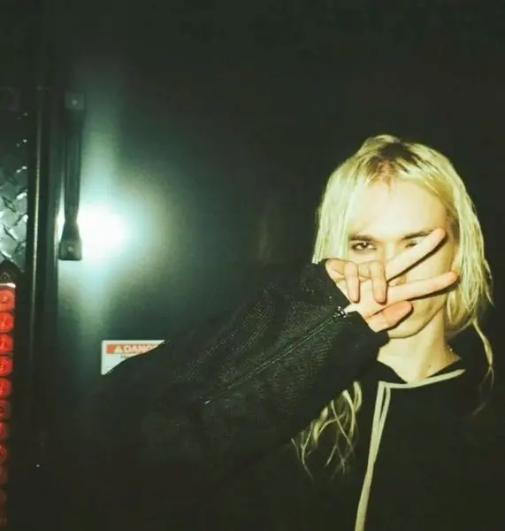
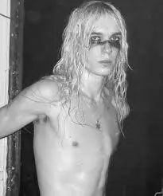
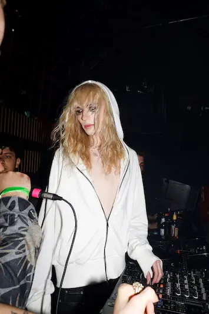

Hollis's Roots
Hollis's background traces back to music from both his mother and father's side. Despite "neon baby" accusations, his development appears rooted in creative exploration. His mother, Kathryn, was a co-founder of the legendary label OSWA, which contributed to early exposure to the industry.
Early Creative Development
From an early age, Hollis experimented with production and songwriting. He first released music under the alias "drippysoup," building an audience online. This early era helped shape his distinct digital identity and hybrid sonic palette combining rap, electronic, and pop elements.
His rise represents a new-wave internet artist trajectory, where independent production meets viral distribution.
Hollis's Best Songs
- Jeans
- Gold
- Cliche
Albums
- 2
- Boy
- White Tiger
Gallery



Learn More
Explore more about 2hollis on Last.fm or read background coverage on Wikipedia.